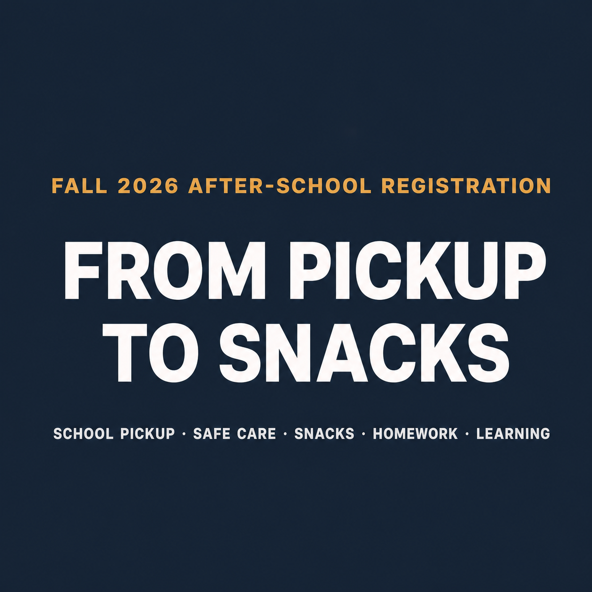

A New School Year,
A Better After-School Routine 🍂
When the new school year begins, family schedules get busy again. School pickup, safe care, snacks, homework, and learning can be a lot to coordinate—so JC After School brings it all together in one place.

🚌 From Pickup to Progress One stop after school
Our program begins when your child walks out of school. We provide safe pickup, time to recharge with a snack, support for homework, and focused learning in the subjects where each student needs it most.

🍪 Snacks Every Day, Included No extra charge
Children are hungry when they get out of school, and a hungry child does not do homework well. So we prepare a snack every single day and do not charge for it. There is no separate snack fee.

It is not a bag of chips. We rotate through fresh fruit, cereal, baked snacks and warm food, and children sit down to eat properly rather than grabbing something on the way past.


🥜 We never use peanuts or tree nuts. Please tell us about any allergy during your registration consultation. We adjust snacks and meals accordingly, and can substitute a snack sent from home.


📚 More Than Supervision Small daily learning gains
Keeping a child safe is only half of after-school care. The other half is what happens during those hours. At JC, the time after snack goes to homework and learning: assignments first, then targeted work on whichever subject needs it.


The range of grades is part of what makes this work. Kinder–Grade 7 after-school care and Grade 7–12 Math, Science and English run in the same space, so your child does not need to find a new place as they move up.


How an Afternoon at JC Flows
We discuss your Kinder–Grade 7 child's school and route, then arrange a safe trip to the centre where available. (Tri-City area + Surrey)
A snack is prepared every day at no extra cost. Children settle in, recharge, and then start their next activity calmly.
We help students stay on track with assignments and build the habit of planning, working independently, and finishing well.
Learning is matched to each child's grade and current level, strengthening foundational skills and confidence at school.
👨👩👧 Who Is This Program For?
It is a great fit for families concerned about the gap between dismissal and the end of the workday, families who find it difficult to coordinate separate pickup and tutoring schedules, and parents who want their children to come home with homework and learning well underway.
This is more than childcare.
JC becomes a comfortable second space for children, a dependable after-school routine for parents, and a place where small daily learning gains grow into lasting confidence at school.
📍 September Registration Consultation
Pickup availability and the right program for your child depend on their school, grade, and learning needs. Contact us early so there is plenty of time to prepare before the new school-year schedule begins.
When you contact us, please share: your child's grade · school name · pickup days needed · subjects of interest (Math, Science, or English) · preferred start date
New families can begin with a free trial to experience the centre and our approach to learning. Feel free to reach us by KakaoTalk or phone with any questions.
※ Every photo on this page was taken at our Coquitlam centre during real classes and snack times (2026 Summer Camp and regular sessions).